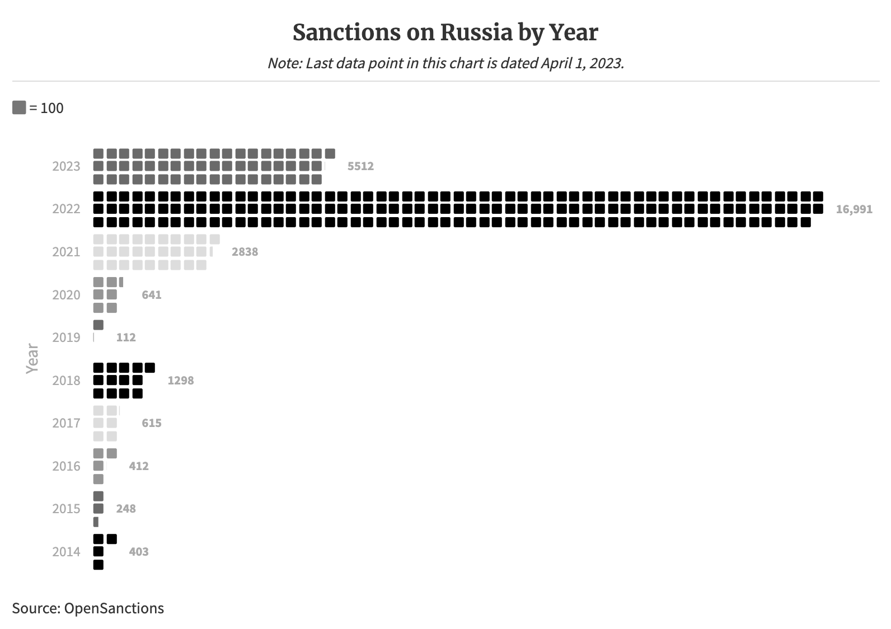
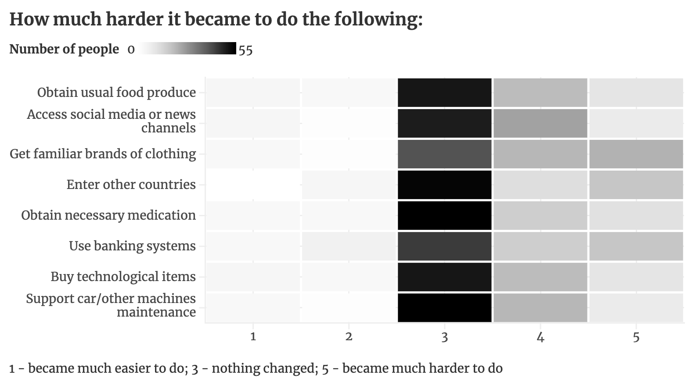

Economic Sanctions on Russia: From Behind the Iron Curtain
Russia has been sanctioned since its invasion of Crimean peninsula in 2014, most heavily by the United States and the EU. However, those sanctions only compoose 22.6% of sanctions on Russia up-to-date. The wast majority of sanctions came on
and after February 24th, 2022, the day of full-scale invasion of Ukraine.

Mark R. Beissinger, Professor of Politics at Princeton University, who studied the Post-Soviet world for over 30 years, explains that the reasons to impose sanctions are to target Russia’s military capability and “for ourselves, (...) as
countries engage in sanctions, when they don’t really have many other ways of responding.” However, Professor remarks that sanctions will not and do not have any effect on Russia’s domestic or international policies, as studies of sanctions
have shown.
To investigate the influence of sanctions in conjunction with a numerous withdrawal of international companies from Russian market, the reporter on this piece has designed a survey. It was then spread through a popular in Russia social media
Telegram, targeting all federal districts and a variety of channels by topics. Out of 87 respondents, 56.32% (49 individuals) said they felt personally felt an impact of sanctions on their country in the past year. A survey also asked
to rate how much harder it became to do certain most vital activities that were frequently evaluated by interviewees and other news sources. As a general trend, about half or more of the respondents answer “no changes” for all estimated
categories.

Vladimir from Krasnoyarskiy Kray works as a welder in infrastructure of nuclear electrostations. He highlights the complete disappearance of world tech giants like LG, Sony, and Samsung from shelves in the consumer technology networks, saying
“they are simply not there.” Instead, he mentions appearance of the brands he has never heard of and neither did the consultants in the store. Vladimir describes that “there is an impression that someone randomly picked goods from “TV”
search on AliExpress.” The issue, he says, concerns absolutely all consumer technology, like fridges, computers, TV sets, and so on.
“All of those are no-name Chinese brands. I can name a few of our native brands, but those are still from the 90s and are absolutely non-competitive with the produce we were used to getting,” Vladimir says.
“The so-called “parallel import” through Kazakhstan is present, but all of the borders to other countries are about 1000km [622 miles] away from me—to Kazakhstan, Mongolia, and China,” Vladimir explains. Parallel import is an import of products
that are legal in other countries without obtaining proper rights, also referred ot as grey product. So, we can see coke at a supermarket that was brought from Kazakhstan, but it’s factually very rare because of the distance.
Elena from a city in Northern Caucasus had a leadership position in medicine in the three months before Russia’s full-scale invasion of Ukraine. She and her family left Russia in April of 2022 and went to Turkey, Georgia, and then Mexico,
as they do not require entry visas, finally arriving to the United States in November of the same year. She describes that when you can’t buy some brand or something else, you don’t really care, because you did not go such stores in the
first place because they are expensive.” More than 60% of Russian citizens do not receive more than twice the minimal salary, and one minimal salary is impossible to live by on your own, not even mentioning children and other dependent
family members.
One most noticeable aspect, however, was a lack of necessary medications in the hospital. Elena recalls how “ealier, we could use high-quality medication for children and provide high-quality medical aid; with their disseapreance—the quality
of treatment became worse.” You have to wait for some medication for a very long time and it’s amount is very restricted, she says.
Professor Beissinger emphasizes that the parallel import and black market imports into Russia are a big problem. He notes that there are documented effects on the military production, although “[not] so much on the supply of consumer goods
in Russia or the standart of living in Russia.” Beissinger adds that most goods are going into the European part of Russia through Belarus, for which “western countries haven’t tried as much as they should to cut of the flow of goods.”
He does not believe sanctions could in any way aid any sort of revolution in Russia or make more people speak out against the invasion, but “it would be useful to try to tighten up some of those sanctions.” Professor remarks the prosecutions
for openly speaking against the so-called “special military operation,” but states that “you do need to make sure that Russians realize that the country is suffering a price for the amibitions of its politicians.”
Elena explains that in the rural areas it’s very easy to get food produce, as the nearby villages grow most of what people need to be well-fed and bring it to the city she is from. Vladimir, describes his area as a “province,” on the contrary,
notes significant increase in prices: “One cheese used to cost 360 rubles per kilogram [2.2 lb],” he asks for help for price comparison from his girlfriend Tania, “and now it’s starting at 700 rubles, while about half a year ago you could
still buy it for 500 rubles.”
Indira from Kazan is also studying abroad and have not been back to Russia since the start of the full-scale invasion. Her main issue with sanctions was transferring money, as a lot of the banks are cut off from SWIFT, the international payment
system, so she had to find other ways around. Her solution was to just use another bank that is still not cut off from SWIFT; some people she knows have also used cryptocurrency. Her friends also had many issues with withdrawing money
from the banking cards produced in Russia.
With many companies who withdrew the market, she notes that “it’s not an issue, when you cannot buy this specific product, it’s an issue that you cannot buy it from this specific company.”
“I have a friend, who went to Russia over the winter break and she noticed coke in very obviously not the official packages, so it definitely exists,” Indira notes. Vladimir says it’s the Russian company “Dobryy” that started producing coke
now, however “most people don’t care whether it’s the original coke or the replaced one, it’s still coke to them.”
Ivan is an international student from Russia from a small city in Moscow region. He left for school in January of 2022 and since Russia has started the full-scale invasion of Ukraine in February of the same year, he did not go back home since.
His parents and some high school friends are still in the country. Ivan says he basically does not feel any effects of sanctions as a Russian citizen abroad, the only thing is that he can’t apply for visas to certain countries, like Latvia,
Lithuania, and Estonia, and the United States visa expires in a year, which is less than most students would get.
As he is talking with his parents on his phone periodically, he noticed that “the people are very fast to adapt, because well the prices are going up, but it’s been the case for like twenty years, so who cares.” Ivan notes that there is a
noticeable gap between the rich and the poor in Russia and now it’s increasing even faster. As a lot of companies have left the market, he hears stories of his remote family losing their jobs. Indira also recalls some of her friends losing
a job temporarily because a car-manufacturing company left the market. Based on the survey designed for this project and filled out by 87 Russian citizens, only 10.33% (9 individuals) had to change their workplace due to the sanctions
and 77.8% of them (7 individuals) answered that they have felt an impact of sanctions on their life.
Note: Most of the interviews with the respondents were conducted in Russian and then translated by the reporter on this story, as she is fluent in Russian. The survey was also designed in Russian and spread through Russian-language channels
of cities and smaller towns from different federal areas, targeting all age groups, all occupations, and all income categories. Only first names of the interviewed people are provided due to their safety concerns, as all of them are either
still in Russia or have substantial family connections there.